- O logotipo oficial da NBA é a silhueta do lendário Jerry West, mas a liga nunca reconheceu essa inspiração de forma oficial para evitar pagar milhões em direitos de imagem ao ex-jogador.
- Wilt Chamberlain jogou os 48 minutos de quase todas as partidas da temporada 1961-62, acumulando a incrível média de 48,5 minutos por jogo porque a sua equipe disputou diversas prorrogações e ele simplesmente não saía do banco.
- Shaquille O'Neal arremessou 22 bolas de três pontos em toda a sua vitoriosa carreira de 19 anos, mas conseguiu converter apenas um único arremesso longo, atuando pelo Orlando Magic em 1996.
- Manute Bol, com 2,31 m de altura, e Muggsy Bogues, com apenas 1,60 m, o jogador mais alto e o mais baixo de toda a história do basquete, atuaram juntos na mesma equipe pelo Washington Bullets na temporada de 1987.
- Rasheed Wallace detém o recorde absoluto e quase imbatível de 41 faltas técnicas em uma única temporada (2000-01), o que resultou em sete suspensões automáticas durante aquele ano.
- Paul Pierce entrou em quadra para disputar todos os 82 jogos da temporada 2000-01 pelo Boston Celtics apenas um mês após sobreviver milagrosamente a 11 facadas no tórax, pescoço e ombro em uma casa noturna.
- Entre 1984 e 2020, todas as Finais da NBA contaram com pelo menos um atleta que já havia sido companheiro de equipe de Shaquille O'Neal em algum momento de sua carreira profissional.
- Kobe Bryant foi selecionado na 13ª escolha do Draft de 1996 pelo Charlotte Hornets, mas o time não tinha intenção de mantê-lo e fechou uma troca com o Los Angeles Lakers minutos após a escolha.
- Até a introdução oficial da linha dos três pontos na temporada de 1979-80, qualquer arremesso do meio do campo ou de cesta a cesta valia os mesmos dois pontos de uma bandeja comum.
- Tim Duncan conquistou cinco títulos e se manteve no topo por duas décadas, sendo o único jogador da história selecionado para o All-NBA e All-Defensive Teams por 13 temporadas consecutivas.
- O jogo com o menor placar da história terminou 19 a 18 para o Fort Wayne Pistons contra o Minneapolis Lakers em 1950, onde o time vitorioso congelou a bola no ataque e forçou a criação do relógio de posse de 24 segundos.
- Jameson Curry é o dono da carreira mais curta de todos os tempos na liga, acumulando um tempo total em quadra de exatamente 3,9 segundos pelo Los Angeles Clippers antes de ser dispensado.
- Michael Jordan precisou usar a camisa com o número 12 e sem seu nome nas costas durante uma partida em 1990 contra o Orlando Magic, pois sua lendária camisa 23 foi furtada do vestiário horas antes do jogo.
- A jogada da enterrada foi banida do basquete universitário americano entre 1967 e 1976 em uma tentativa explícita da organização de diminuir a dominância avassaladora de Lew Alcindor, que mais tarde mudaria de nome para Kareem Abdul-Jabbar.
- Pete Maravich previu a própria morte durante uma entrevista em 1974 ao afirmar que não queria jogar 10 anos na NBA e falecer de ataque cardíaco aos 40 anos; ele acabou jogando exatamente 10 temporadas e morreu tragicamente de parada cardíaca aos 40.
- Jerry West foi eleito o MVP das Finais de 1969 e continua sendo o único jogador na história do basquete a receber esse prêmio atuando pela equipe que perdeu a série decisiva.
- Metta World Peace, na época conhecido como Ron Artest, solicitou formalmente um mês de folga da temporada regular do Indiana Pacers em 2004 para poder viajar e promover o lançamento do seu álbum de rap.
- Dave DeBusschere dividiu sua carreira de atleta profissional atuando simultaneamente como jogador da NBA pelo Detroit Pistons e arremessador da Major League Baseball (MLB) pelo Chicago White Sox durante duas temporadas.
- A bola oficial da liga foi fabricada integralmente de couro de vaca natural até o ano de 2021, o que exigia um processo manual por parte dos roupeiros das franquias para amaciar e desgastar o couro antes das partidas.
- Klay Thompson registrou uma das atuações mais eficientes de todos os tempos ao marcar 60 pontos em apenas 29 minutos contra o Indiana Pacers em 2016, necessitando de apenas 11 quiques na bola para alcançar a marca.
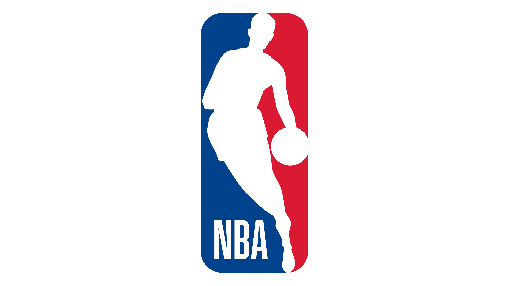
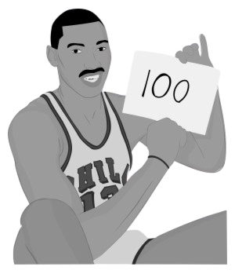
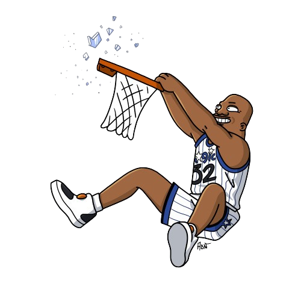
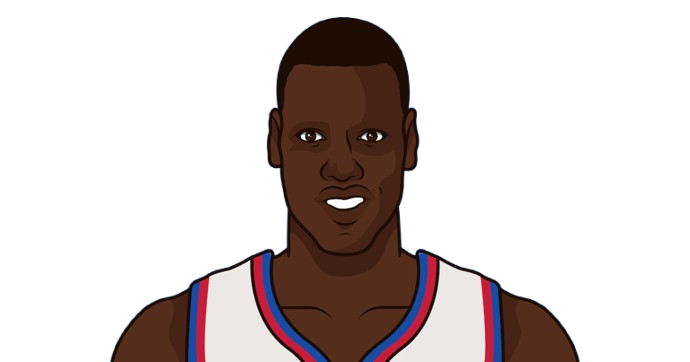
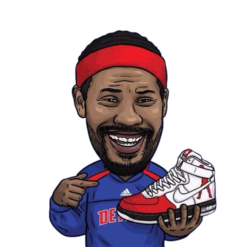
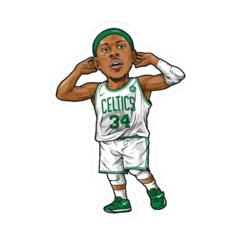
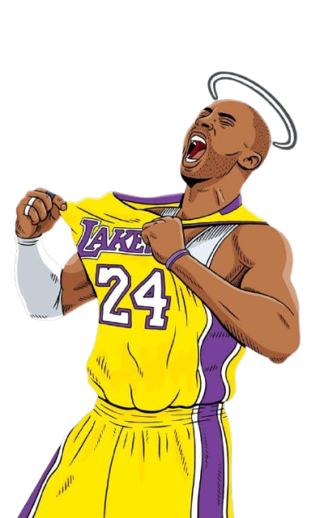
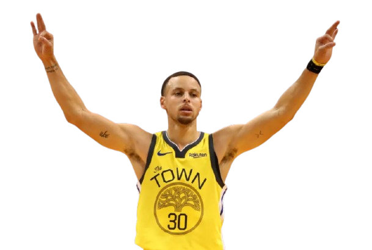
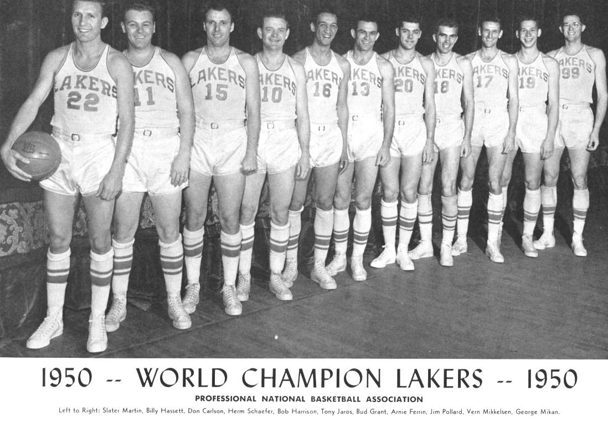
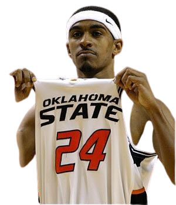
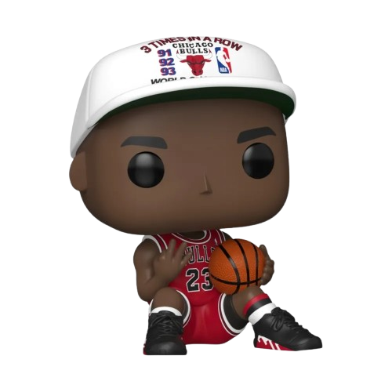
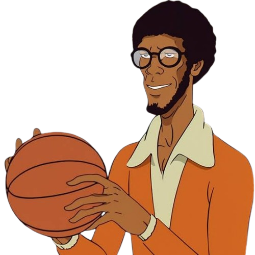
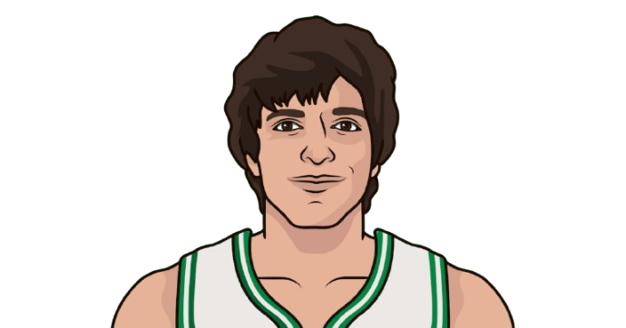
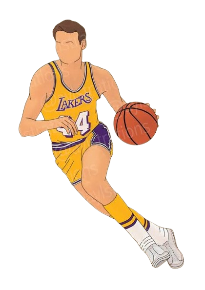
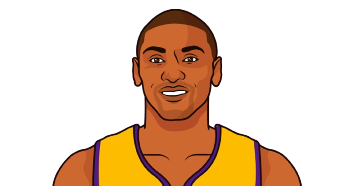

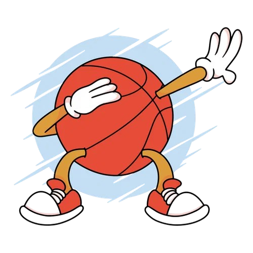